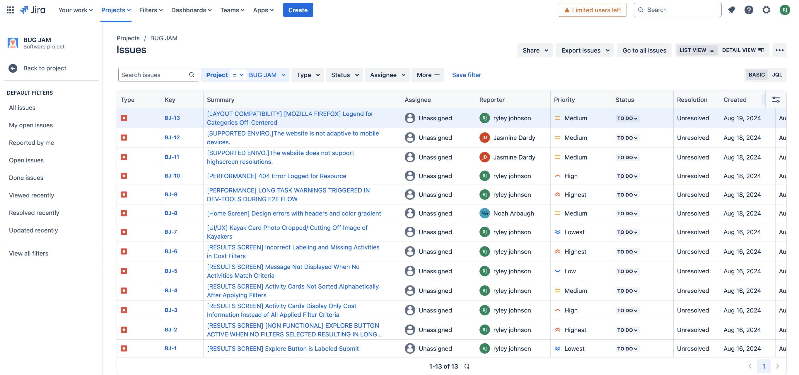

Bug Jam Experience
August 2024 · TripleTen QA Bootcamp
Four-day Bug Jam during TripleTen QA bootcamp. Our team placed first among four teams testing a web app built by software engineering students in July's Code Jam. Work covered manual UI testing, test cases, coverage, bug logging, and a presentation for judges.
App we tested
Meet the team
Teammates: Jasmine Dardy and Noah Arbaugh. We split the app by area and ran through STLC steps together.
Tools & techniques
Chrome DevTools for performance, layout across viewports, and element inspection.
Bug tracking with Jira
Shared Jira template for logging, categorizing, and prioritizing bugs.

Test case sheet
Manual test cases for Summer Adventure across the home screen and results flow — steps, expected vs actual results, pass/fail status, and Jira links for every failure.
By screen
- Home screen
- Results & explore
Coverage areas
Sample results
-
Failed #3 · Home
Home page should match inviting summer-adventure design
Emoji in heading/sub-heading; gradient did not fill the screen vs mock-up.
-
Failed #32 · Results
Explore button functionality
Explore flow did not behave as specified after filters were applied.
-
Failed #34–36 · Results
Display of all low / mid / high cost options
Filtered result sets did not show the full expected option lists.
-
Failed #56 · Results
Website adaptive to mobile devices
Layout and usability issues on mobile viewports during exploratory testing.
Judges review
Summary from the official Team Triple Threat scorecard — QA deliverables and final presentation, judged by TripleTen staff after the Bug Jam.
What we were graded on
- Test cases — coverage, format, and how well requirements were broken into atomic scenarios
- Bug reports — clarity, structure, reproducibility, and evidence
- Test results — how many issues were found vs requirements, and how results were documented
- Presentation — structure, communicating key findings, engagement, visuals, and staying within time (5–7 minutes)
What judges praised
- Test cases were detailed, atomic, and easy to execute — strong decomposition of requirements, including non-functional checks
- Bug reports followed a consistent template with clear titles, steps, expected vs actual, environment, and attachments
- Reports covered most major issues between the app and requirements; easy to reproduce
- Presentation had a clear intro, body, and conclusion; accessible language and strong bug screenshots/recordings
- Slide design called out as modern, consistent, and engaging; smooth handoffs between speakers
What made us stand out
- Judges highlighted depth of test design — individual validations per requirement, not bundled scenarios
- Professional-grade bug write-ups — brief titles stating what/where/when, without extra noise
- Visual bug demos helped the audience see issues on the real app, not just read titles
- First-place finish among four teams — strong balance of documentation + live storytelling
Where we could improve
- Split combined issues into separate bugs (e.g. emoji vs background gradient in one report) and use sharper titles
- One requirement gap noted: Gastronomy subheading/section not called out in testing
- Add a full test execution summary so pass/fail trends are obvious at a glance
- Presentation: organize “other bugs” into priority columns; add a dedicated tools slide and bullet the teamwork slide
- Stay within the 7-minute window (we ran ~7:45); polish the closing sections so energy stays consistent
Reflection
Sharpened test planning, bug reporting, presentations, and remote collaboration. The Bug Jam was intense and mapped directly to bootcamp skills.